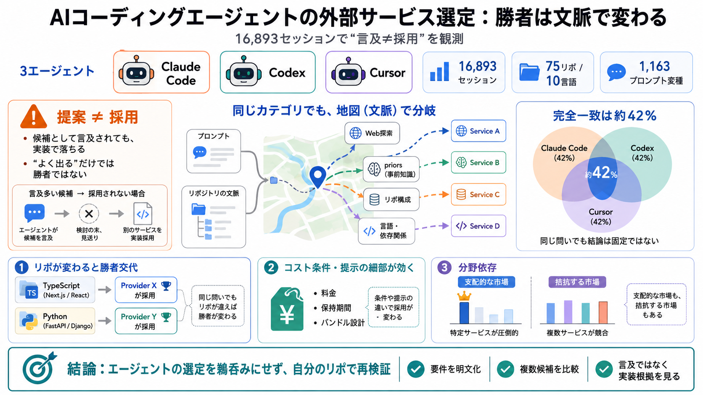

AI Coding Assistant Statistics 2026: Adoption & Trust
87% are concerned about the accuracy of AI agents, and 81% have concerns about security and data privacy when using them…

AIコーディングエージェントは、同じ「カテゴリ」でもリポジトリ文脈や情報源の癖で勝者が割れ、16,893セッションで“言及≠採用”が鮮明になりました。
多くの開発者は「エージェントが挙げた製品」をそのまま信用しがちですが、この研究は“コードへ変更（実装）まで行う意思決定”を観測し、単なるおすすめのズレを扱います。
エージェントの“探索（Web検索など）”と“既存知識の重み（priors）”が違うため、同じカテゴリでも結果が割れます。つまり勝者は固定解ではなく、地図（文脈）で変わる探索結果です。
実験は、人物プロファイルやプロンプト変種だけでなく、リポジトリ設計（75リポ/10言語/除外条件）を変え、同一カテゴリ内で勝者が入れ替わる頑健性を測りました。
同じ依頼でも、リポジトリの言語や構成が変わると、メール配信やデータベースなどの“勝者”が入れ替わりました。
知名度や“言及回数”だけでは採用（実装）に結びつかない例が目立ちます。候補として出ても、条件との整合で落ちることがあるのです。
同じ“問い”でも、3エージェントが同一ツールを選ぶ割合は42%程度とされ、完全に同じ結論になりません。情報源の癖と適合判断の差が残ります。
依頼の20〜25%で費用や利用量の条件を含める調整が行われ、コスト/運用負荷に触れた提示では選択が揺れる可能性が示唆されました。
特定カテゴリではStripeやAmazon S3のように極めて支配的な結果が出る一方、他分野では複数候補が拮抗して争われます。
最終選択は、ベンダーページの見せ方や無料プラン条件、さらにDB/認証/ストレージ等のバンドル設計のような“提示の粒度”で変わり得ます。
強みは“実装まで”追跡し16,893セッションで傾向を観測する点です。一方で、社内購買・セキュリティ審査・コスト最適化など「研究の外側」がどこまで再現されたかは不明です。
エージェントの選定をそのまま採用せず、あなたのリポ文脈で再評価し、コスト・保持ポリシー・運用/監視・移行コストを条件化して比較検証するのが安全です。
87% are concerned about the accuracy of AI agents, and 81% have concerns about security and data privacy when using them…
Evaluating AI coding assistants for large, messy codebases is difficult because enterprise teams need architectural unde…
Third-party runs put it behind Claude on SWE-bench Pro at 64.6% against 69.2%, which is the split that decides this rank…
Image 8: four charts showing AI coding assistant comparison metrics: PR Merge Rate by Tool; Code Smells by Tool; PR Cycl…
Amazon Q Developer is significantly more valuable in AWS-heavy environments. Its strength is cloud architecture guidance…